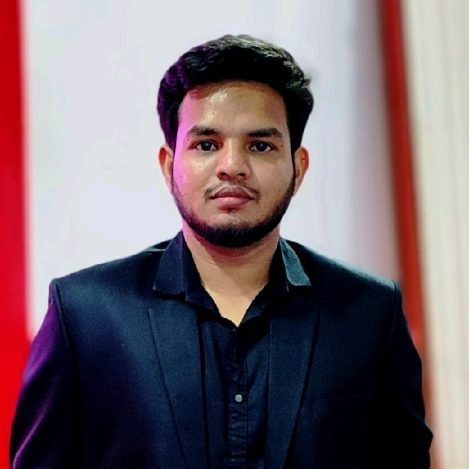

MOHD FAIZ ANSARI
Indian Institute of Information Technology
Perusing Mtech in IT from IIIT Allahabad with a specialization in Machine learning and intelligent systems.
Education
- M.tech in IT | IIITA 2024
- B.tech in Mechanical Engineering | IMSEC 2018
Projects
Road Anamoly Detection
- Speed-Bump and pothole detection using smartphone sensors
- Jan.2023 - ongoing
Thermal to visible image transformation
- Transforming thermal images to visible images
- Jan.2023 - May.2023
Training / Experience
Teaching Assistanceship
- Experience in assessments and feedback
- Leadership through collaboration of students and colleagues
Industrial Training
- Anand NVH (P) LTD
- Molding, Mixing, Metal Preparation
Technical Skills
Languages
Developer Tools
- VS Code
- VI / VIM
- GIT / Github
Frame Works and Technologies
- Hadoop (Basics)
- Spark (Basics)
Achievements
India International Science Festival - IISF - 2017
- Ideas for Navbharat Nirman
World Robot Olympiad - WRO - 2016
- 2nd position national level
- Demonstration of E-Waste Recycler using LEGO
Others